EN
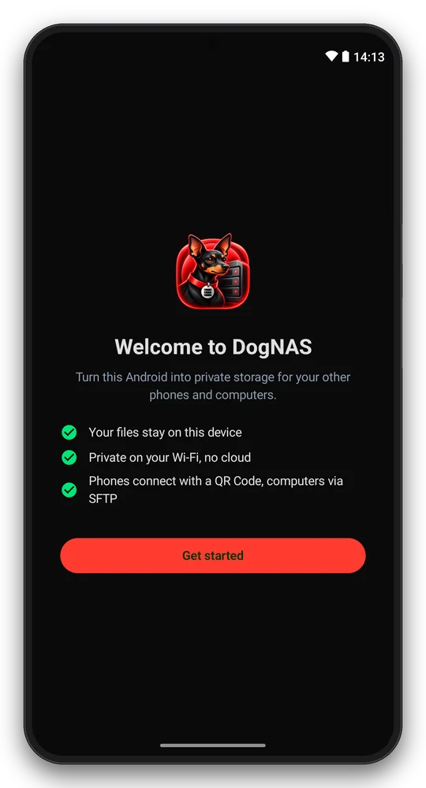
First run: three steps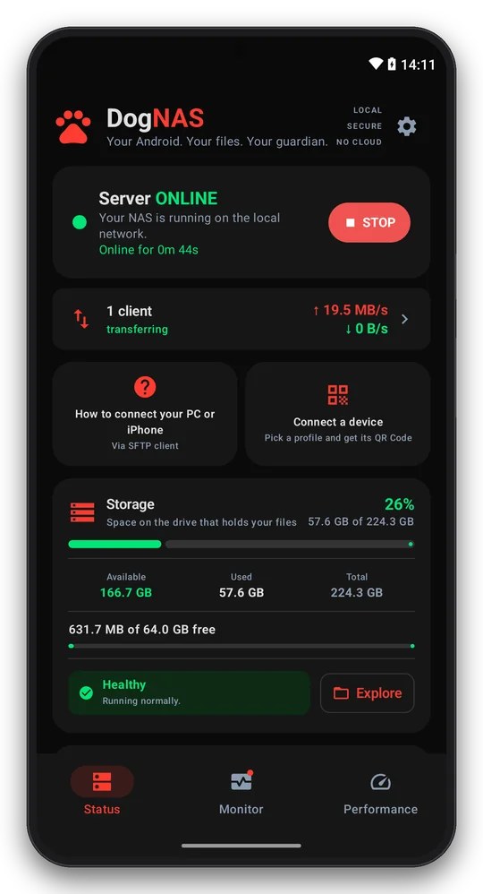
Status: server online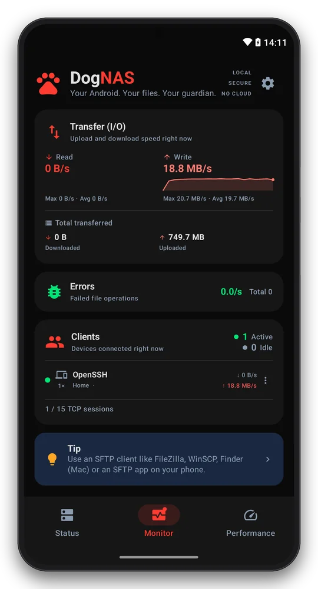
Monitor: transfers in real time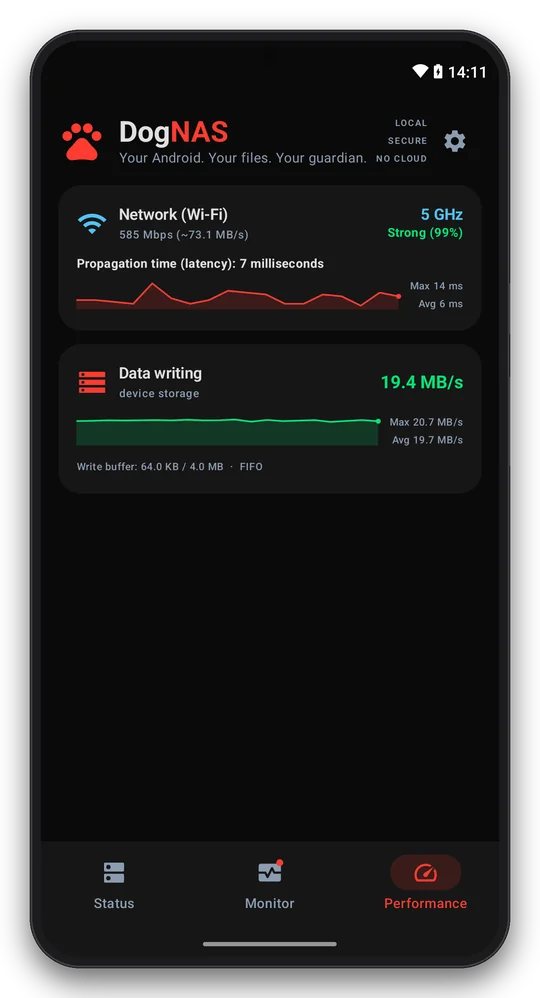
Performance: Wi-Fi, disk, CPU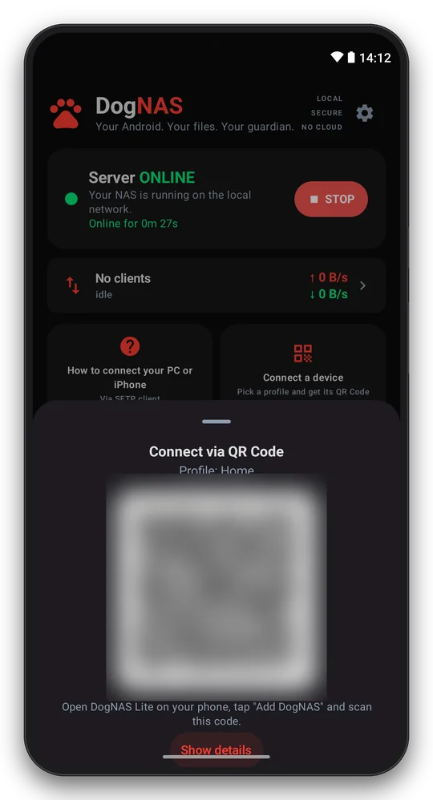
Pair a phone with a QR Code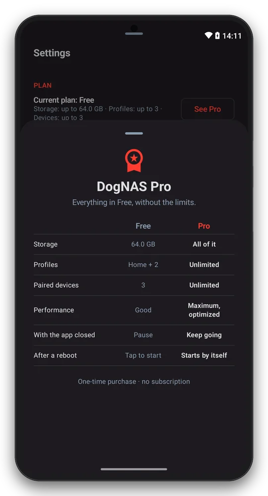
DogNAS ProPT
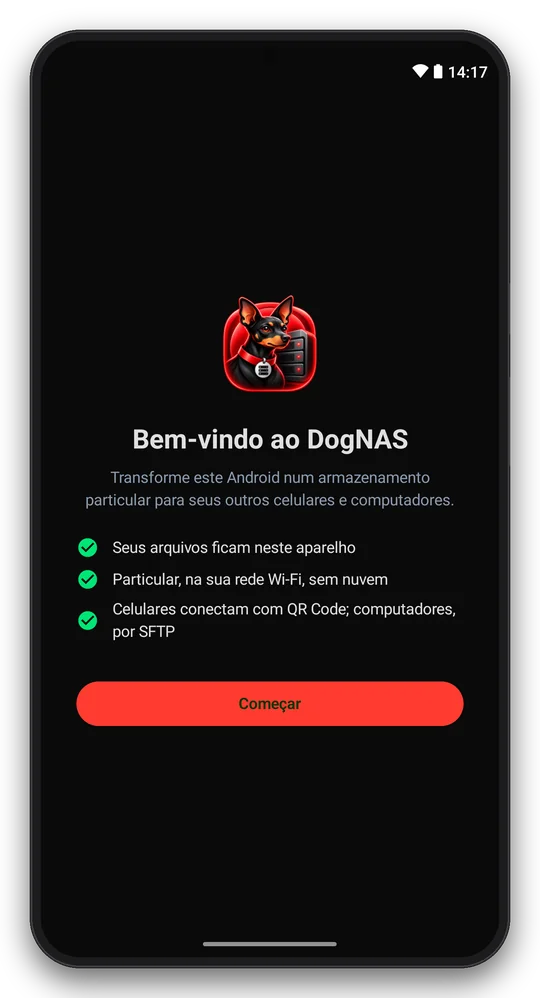
Primeiro uso: três passos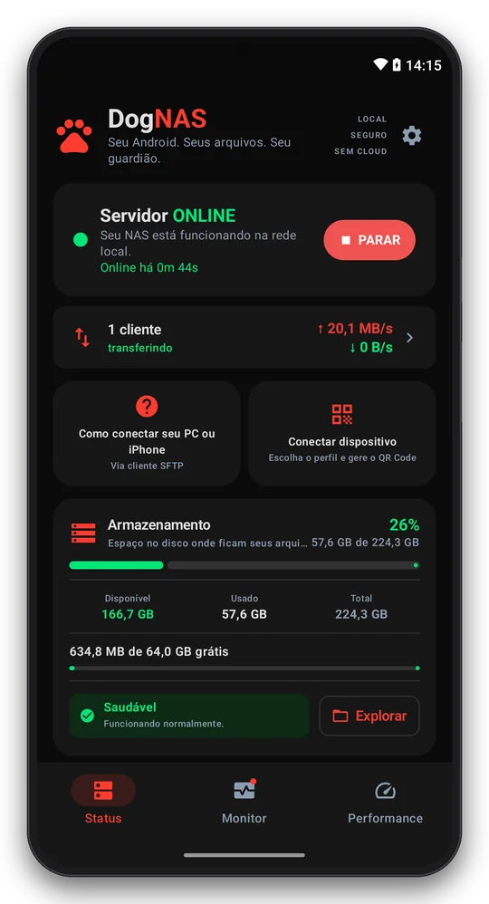
Status: servidor online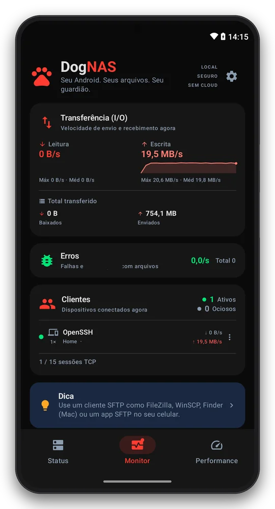
Monitor: transferências em tempo real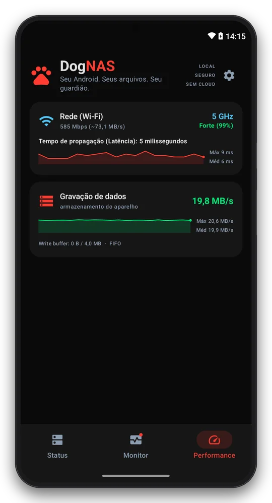
Performance: Wi-Fi, disco, CPU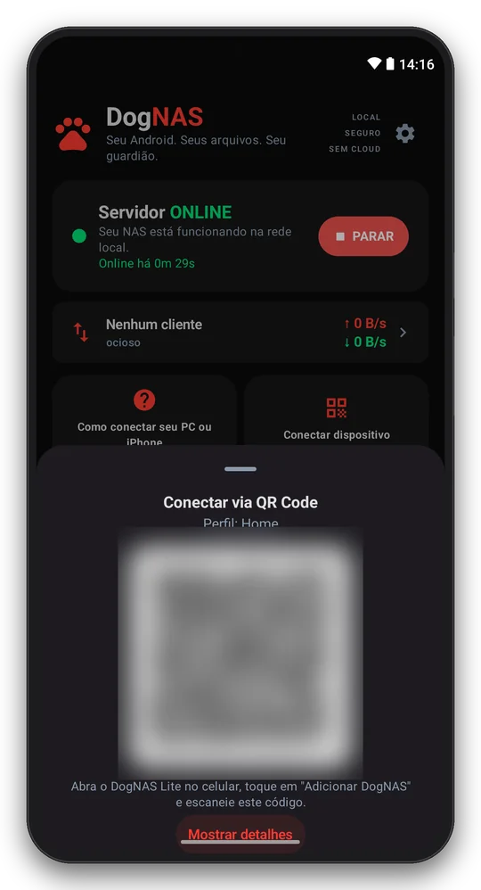
Pareie um celular com QR Code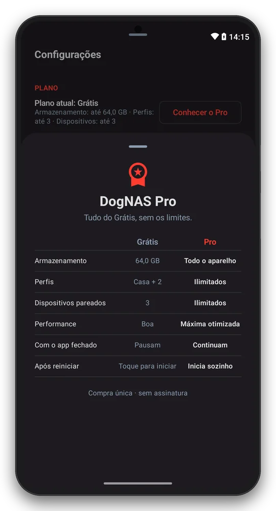
DogNAS ProES
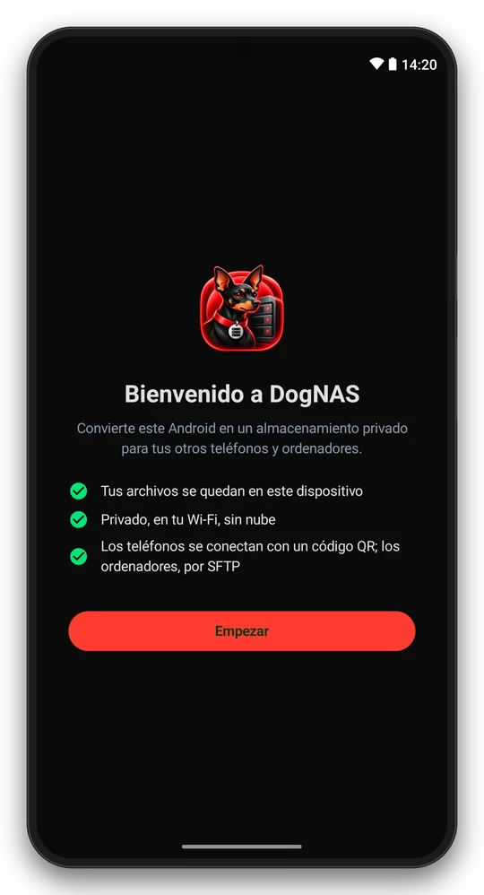
Primer uso: tres pasos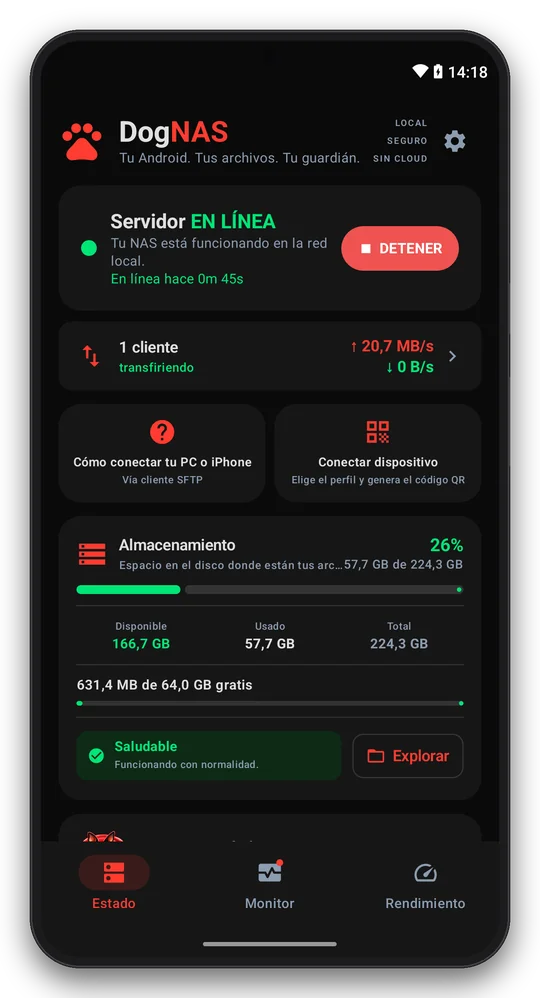
Estado: servidor en línea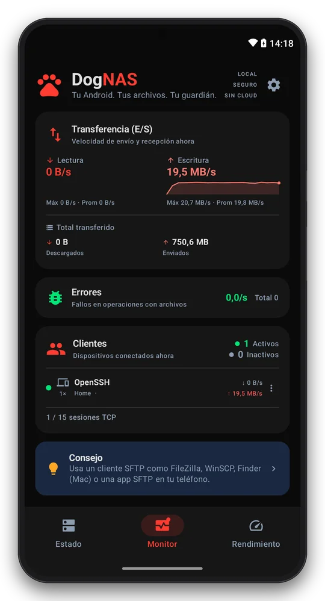
Monitor: transferencias en tiempo real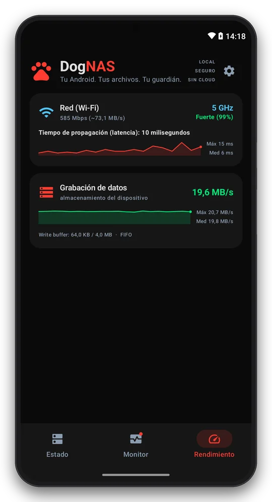
Rendimiento: Wi-Fi, disco, CPU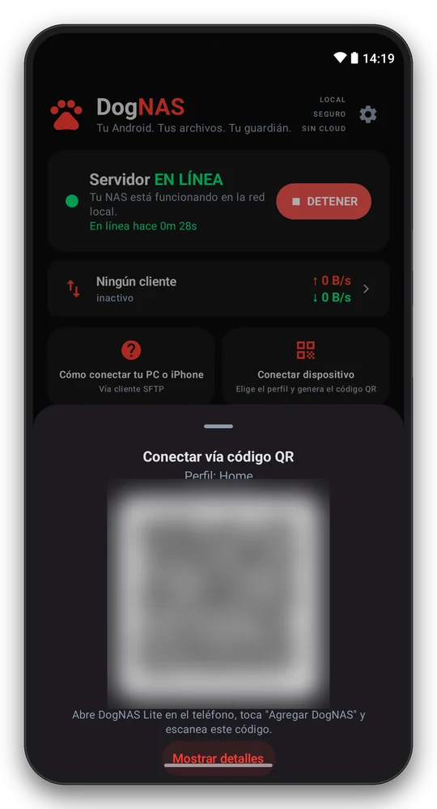
Empareja un móvil con un código QR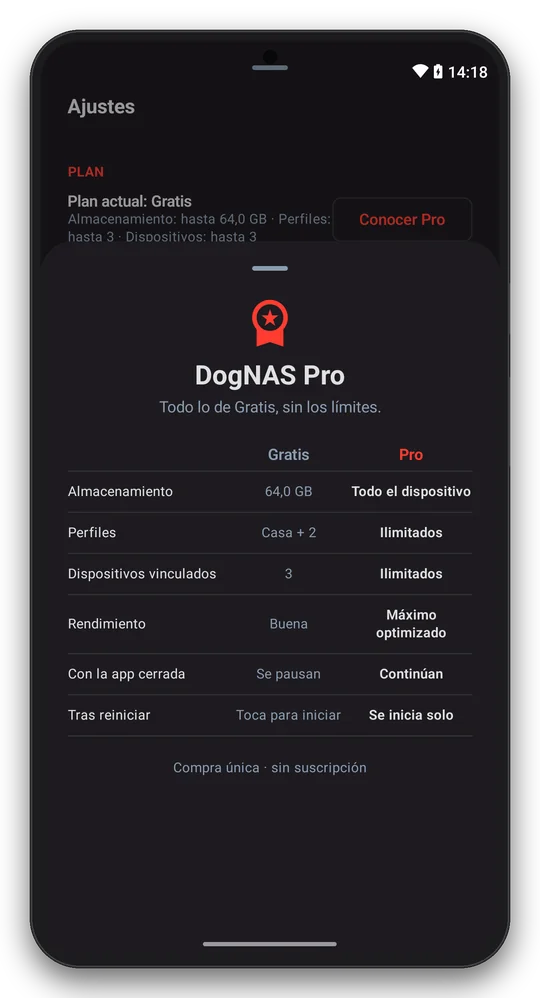
DogNAS Pro